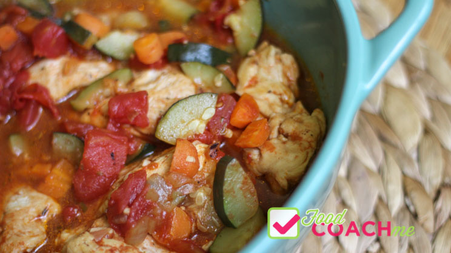

🛒 Ingredients
👩🍳 Instructions
1
2
3
4
5
Notes
One portion will provide approximately 3 ounces of meat and 1/2 cup of vegetables. Listen to your pouch and stop at the first sign of fullness.
Servings are shared to allow you to know how much the recipe will make, but not dictate how much you are supposed to eat.
📊 Nutrition
Nutrition Facts
About 4 servings per container
Serving size3oz (85g)
Amount per serving
Calories
% Daily Value *
Total Fat 6g8%
Saturated Fat 1g5%
Trans Fat 0g
Cholesterol 48mg16%
Sodium 202mg9%
Total Carbohydrate 11g4%
Dietary Fiber 1g4%
Total Sugars 2g
Protein 24g
Vitamin A 2443IU
Vitamin C 11mg12%
Calcium 31mg2%
Iron 1mg6%
Potassium 476mg10%
* The % Daily Value (DV) tells you how much a nutrient in a serving of food contributes to a daily diet. 2,000 calories a day is used for general nutrition advice.